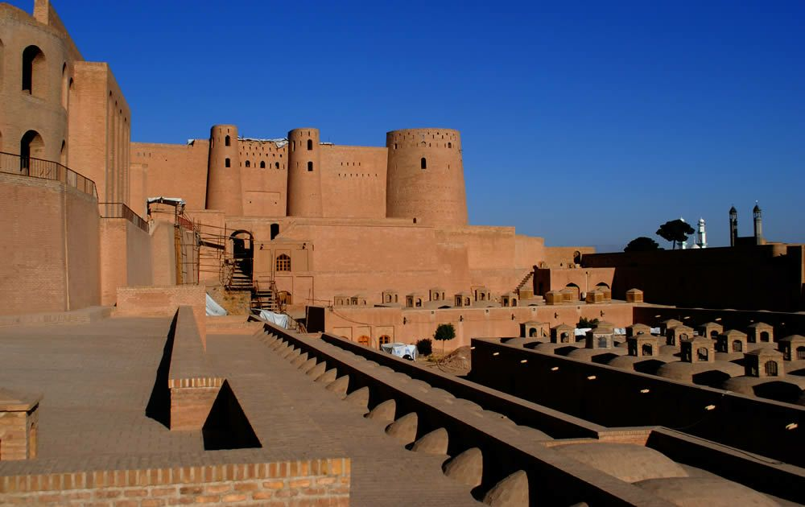
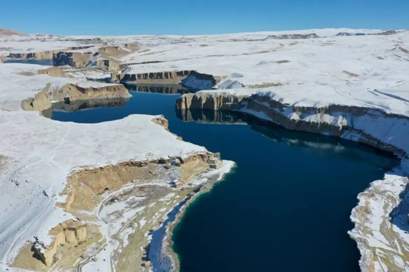
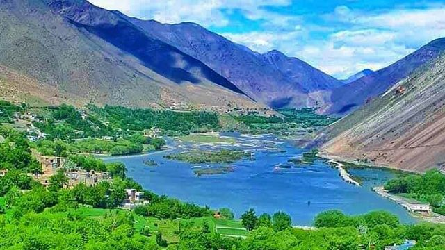
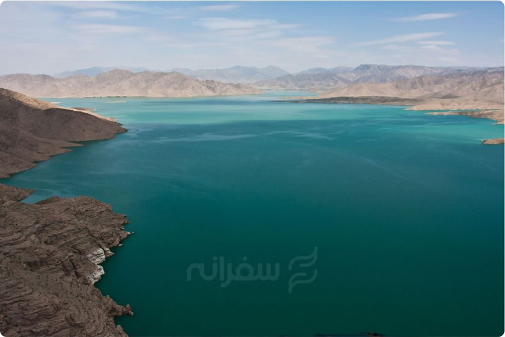

the one place is herat
this place is called iktiar al-Din castle
The Herat Citadel, also known as the Citadel of Alexander or Qala Ikhtyaruddin, is a historic fortress in Herat, Afghanistan. It dates back to the time of Alexander the Great in 330 BCE, when Herat, then known as Artacoana, was rebuilt and renamed Alexandria of Aria. Over the centuries, the citadel has been expanded and rebuilt by various empires, including the Ghaznavids, Kartids, and Timurids. The structure is a remarkable example of military architecture in the region, featuring 18 brick towers and thick defensive walls that rise up to 16 meters in height. It has two main enclosures: an upper section housing ruins of officers, quarters and a treasury, and a lower section with stable buildings around a courtyard. Herat's strategic location made the citadel a center of trade and culture, particularly during the Timurid era. However, it also faced destruction during invasions by figures like Genghis Khan and Timurlane. Restoration efforts, especially by the Aga Khan Trust for Culture and UNESCO, have helped preserve the citadel, making it accessible to visitors as a site of historical and educational significance.
The Herat Citadel, also known as the Citadel of Alexander, is a historical fortress that dates back to the time of Alexander the Great. Located in the city of Herat, the citadel has been restored and now serves as a museum. The fortress offers panoramic views of Herat and provides insights into the region's rich history. Visitors can explore the various sections of the citadel, including the ancient walls, towers, and courtyards. The museum houses a collection of artifacts that showcase the history and culture of Herat. The Herat Citadel is a must-visit for history buffs and anyone interested in Afghanistan's ancient past.
this place is bamian
this place called band amir
This place has many stories that made this place famous
The story of dams Hazrat Ali created the first dam by splitting the mountain with his sword, which was known as Zulfikar, then when the flood came down from this dam, he made the next dam with a bunch of oregano plant. Amir al-Mu'minin built the third dam by turning local women's cheeses into stones, but he could not stop the flood.
Band-e Amir, located in Bamyan Province, Afghanistan, is the country's first national park, established in 2009. It is renowned for its breathtaking natural beauty, comprising six crystal-clear, blue lakes surrounded by the rugged landscapes of the Hindu Kush mountains. These lakes were formed naturally by travertine dams, and their striking blue color comes from the high mineral content, especially limestone, in the water. The park is set at an altitude of about 3,000 meters (9,800 feet) above sea level and spans approximately 600 square kilometers. It features a mix of arid cliffs, rocky terrains, and sparse vegetation. In the summer months, alpine flowers and shrubs brighten parts of the landscape. Wildlife in Band-e Amir includes species like ibex, urial sheep, and the elusive snow leopard, along with birds like golden eagles and migratory waterfowl. Band-e Amir is a symbol of peace and stability in Afghanistan and holds cultural significance for local communities. It attracts both local and international tourists, though its remoteness and challenging access limit visitor numbers. Activities in the park include hiking, sightseeing, and enjoying panoramic views of the lakes and mountains. The site also serves as the location for unique events, such as Afghanistan,s annual mixed-gender marathon. What can visitors expect at Band-e Amir National Park? Band-e Amir National Park features a series of six deep blue lakes surrounded by breathtaking land formations. The lakes are a popular location for hiking, picnicking, and taking in the natural beauty. The park is also home to a variety of wildlife, including ibex, wolves, and various bird species.
this place is panjshir
this place called dara panjshir
The Panjshir Valley, located about 150 kilometers northeast of Kabul, is one of Afghanistan's most historically and geographically significant regions. Known as the "Valley of Five Lions," it is surrounded by towering mountains, which make it a natural fortress and a historically strategic area. Its landscape includes narrow passes and rugged terrain, offering substantial defensive advantages, which contributed to its reputation as an unconquerable stronghold. Throughout history, Panjshir has played a critical role in Afghanistan's resistance movements. During the Soviet invasion (1979-1989), the valley was a center of guerrilla warfare led by the legendary commander Ahmad Shah Massoud, known as the "Lion of Panjshir." Massoud's forces successfully repelled multiple Soviet assaults and later resisted the Taliban regime until his assassination in 2001. Even in recent years, Panjshir has remained a symbol of resistance. It became a focal point of opposition to the Taliban after their return to power in 2021, led by Ahmad Massoud, son of Ahmad Shah Massoud. The valley's defensive geography and the historical resilience of its people continue to inspire resistance efforts against external force Today, Panjshir is not only a historical and political symbol but also a place of natural beauty, attracting visitors who admire its majestic
The Panjshir Valley is known for its natural beauty and historical significance. The valley is the final resting place of Ahmad Shah Massoud, a renowned Afghan commander. The valley offers stunning views, hiking trails, and a peaceful atmosphere. Visitors can explore the valley, learn about its history, and enjoy the natural beauty of the area. The Panjshir Valley is a must-visit for nature enthusiasts and anyone interested in Afghanistan's history.
this place is ferah
this place calld homan lake